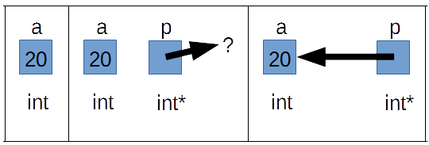

第10章 ～ポインタ導入～
変数の住所
いままで変数はメモリー上に確保されると言ってきました。ところでメモリーと言っても実際にはCPUのキャッシュ領域(L1,L2,L3キャッシュ)、物理メモリー、HDDやSSDに置く仮想メモリーなどがあり、
#include <stdio.h>
int main(void){
int p = 20,;
printf(
"変数p: %d\n"
"変数pのアドレス: %p\n",
p, &p
);
}
変数に入っている数値と変数のアドレスは無関係です、念のため。
変数p: 20
変数pのアドレス: 0038FBA4
このアドレスは実行するごとに変わっていると思います(まともなOSなら)。
ポインタ
みなさま、大変ながらくお待たせいたしました。ようやくポインタのお話です。まあ既に何回もチラチラ出てきてるわけですが。
int a = 20;
int *p;
p = &a;
printf("%d, %p, %d", a, p, *p);
3行目はさっきの変数のアドレスを取得するやつですね。こうすることでint*型の変数、pはaを指します。図を書いたほうがわかりやすいかな。

ポインタが指し示す先を取得するには変数名の前に「*」をつけます。「int *p;」の「*」とは意味が違います。なお
int *p;
int* p;
は同値ですが、
int* p1, p2;
とした時、p2の型は「int型」です。もっとも
typedef int* int_ptr;
int_ptr pi, p2;
とすればどちらともint*型になりますが。C言語ってよぐわがんね。
ポインタは、なにかを指すことで初めて意味を持つから派生型、とかいう言い方をするのですが、
なお、どんな型でもさせるポインタ型というのもあり、void*型がそれです。ただし、使用時はキャストして元の型をコンパイラーに教える必要があります。
#include<stdio.h>
#include<stdlib.h>
#include<limits.h>//in gcc
#include<errno.h>//in gcc
#ifndef __cplusplus
#define nullptr NULL
#endif
int get_integer_num(const int max, const int min){
//機能：標準入力を数字に変換する。
//引数：戻り値の最大値,戻り値の最小値
//戻り値：入力した数字、エラー時はINT_MIN, EOFのときはEOF
char s[100];
if (NULL == fgets(s, 100, stdin)){
if (feof(stdin)){//エラーの原因がEOFか切り分け
return EOF;
}
//改行文字が入力を受けた配列にない場合、入力ストリームにごみがある
size_t i;
for(i = 0; i < 100 && '\0' == s[i]; i++);//strlenもどき
if('\n' != s[i - 1]) while(getchar() != '\n');//入力ストリームを掃除
return INT_MIN;
}
if ('\n' == s[0]) return INT_MIN;
errno = 0;
const long t = strtol(s, NULL, 10);
if (0 != errno || t < min || max < t)
return INT_MIN;
return (int)t;
}
int compare_int(const void *a, const void *b){
return *static_cast<int*>(a) - *static_cast<int*>(b);
}
int main(void){
const int num1 = get_integer_num(INT_MAX, INT_MIN);
if(num1 == INT_MIN) return -1;
const int num1 = get_integer_num(INT_MAX, INT_MIN);
if(num2 == INT_MIN) return -1;
const int result = compare_int(&num1, &num2);
if(result > 0){
puts("num1のほうが大きい");
}
else if(0 == result){
puts("num1とnum2は等しい");
}
else{
puts("num2のほうが大きい");
}
}
NULLポインタ
さて、ポインタは宣言した時は普通の変数がそうであるように、変数の値に何が入っているかわかりません。つまり、どこを指しているかわからないポインタ、というわけです。nullptrを使って ください。
bool hoge1 = (NULL == nullptr);//false
void* hoge_ptr1 = NULL;
void* hoge_ptr2 = nullptr;
bool hoge2 = (hoge_ptr1 == hoge_ptr2);//true
//#define NULL 0 となっている場合(C++コンパイラーならほぼ例外なく)
auto tmp1 = NULL;//int
auto tmp2 = nullptr;//std::nullptr_t
とくに理由のない限り皆さんはC++としてコンパイルするわけで、標準規格への準拠がとっても遅いことで有名なVCもさすがにnullptrには対応しているので、こちらを使いましょう。http://qiita.com/go_astrayer/items/6afb1592a8a5763fede1 http://d.hatena.ne.jp/yohhoy/20120503/p1 nullptr使え 。
ポインタと初期化
改めて、初期化です。
ポインタとconst
以前constとはread-onlyにするものだと言いました。これがポインターを絡めるとどうなるか見て行きましょう。
int main(void){
int hoge1 = 0;
int hoge2 = 1;
}
int *hoge1_p1 = &hoge1;//'hoge_p1' is pointer to int.
*hoge1_p1 = 2;//OK
hoge1_p1 = &hoge2;//OK
const int *hoge1_p2 = &hoge1;//'hoge_p2' is pointer to read-only int.
int const *hoge1_p3 = &hoge1;//'hoge_p3' is pointer to read-only int.
*hoge1_p2 = 3;//error
*hoge1_p3 = 4;//error
hoge1_p2 = &hoge2;//OK
hoge1_p3 = &hoge2;//OK
int * const hoge1_p4 = &hoge1;//'hoge1_p4' is read-only pointer to int.
*hoge1_p4 = 5;//OK
hoge1_p4 = &hoge2;//error
const int * const hoge1_p5 = &hoge1;//'hoge1_p5' is read-only pointer to read-only int.
int const * const hoge1_p6 = &hoge1;//'hoge1_p6' is read-only pointer to read-only int.
*hoge1_p5 = 3;//error
*hoge1_p6 = 4;//error
hoge1_p5 = &hoge2;//error
hoge1_p6 = &hoge2;//error
基本型の前にconstを書こうがあとに書こうが意味は変わりませんし型も変わりません。横に英語訳をつけておきましたが、おなじになってるでしょ？
ポインタとconstを考えるときは上記のように常に英語訳しましょう 。そうすれば混乱することはありません。
参考サイトhttp://kmaebashi.com/programmer/pointer.html http://hunyoi.com/?p=215
問題
以下の3つの関数のうち、コンパイルエラーにならないものはどれか、また理由を述べよ
char* do_something1(char* dest, char const* src){
src = nullptr;
}
char* do_something2(char* dest, char const* src){
*src = 'a';
}
char* do_something3(char* dest, char* const src){
src = nullptr;
}
回答
do_something1関数はコンパイルエラーにならない。なぜならば、変数srcの宣言を英語っぽく読むと